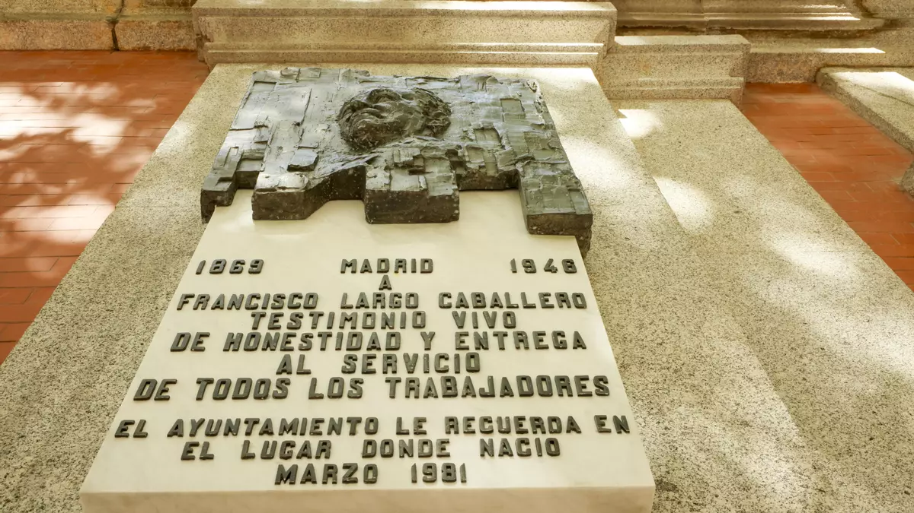

PSOE.:
Historia.: página mia
portal.psoe.es Portal Militancia
sts.psoe.es BIENVENIDO A Acceso PSOE
miPSOE.es
@PSOE twitter
PSOE Congreso twitter Grupo Parlamentario Socialista en el @Congreso_Es
Bloise | Informes elecciones PSOE
PSOE TV
37 Congreso PSOE
Tutiendapsoe.com
La Internacional Socialista
Escuela Formación Jaime Vera
Fundación Ideas para el Progreso Think tank Zapatero -cerrado 2014
Fundaciones afines al PSOE promueven la 'España Vaciada'
Juventudes socialistas -canciones/himnos mp3
Pablo Castellano -izquierda socialista
Diarioprogresista.es -"bases en red" corriente en el PSOE
logo PSOE vectorizado
PSOE identidad corporativa
Estos son los ministros del nuevo Gobierno Pedro Sánchez noviembre 2023
Sánchez rehace su guardia pretoriana | 40º Congreso PSOE
Resultados de la elección a la Secretaría General del PSOE de 2014
Pedro Sánchez 64,086 votos 48.67%
Eduardo Madina 47,734 votos 36.25%
José Antonio Pérez Tapias 19,843 votos 15.07%
16.352 votos diferencia a favor Sánchez
Madina ganó en Navarra
Madina se impone en Navarra por diez puntos y 117 votos a Sánchez
Madina de forma mayoritaria con 602 votos Pedro Sánchez obtuvo 485 apoyos
50 años de militancia política y sindical | Manuel de la Rocha Rubí
Felipe González Márquez. Isidoro
El mismo que indultó al golpista Armada o que pidió el indulto para los responsables del GAL Vera y Barrionuevo y que su amigo Aznar les concedió. el hombre que se manifestó contra la encarcelación de Vera y Barrionuevo por el terrorismo de estado de los GAL o que vivió como presidente escándalos como el de Roldán o Filesa durante sus mandatos fueron muchos los casos de corrupción que fueron juzgados y sentenciados. Todo arrancó con Juan Guerra, el hermanísimo de su todopoderoso vicepresidente, pero luego vinieron los casos Filesa , Ibercorp, Roldán, las escuchas del Cesid, el terrorismo de estado y hasta la entrada en prisión de uno de sus ministros del Interior, tras ser condenado por secuestro.
Sánchez rehace su guardia pretoriana | 40º Congreso PSOE
Felipe González escucha a Rubalcaba y hazle caso:
"La primera regla en un partido es ser leal. Cuando ves a tu líder fajándose contra el adversario y no quieres que gane, tienes que plantearte seriamente que haces en ese partido".
Luis Yáñez, uno de los 'padres' del PSOE andaluz, reprocha a González: “Nace de su amor propio herido”. Achaca la inquina de Felipe González a Pedro Sánchez a que le ganó las primarias socialistas a Susana Díaz, a la que el expresidente apoyó.
(La famosa foto de la tortilla hecha en Alcalá de Guadaíra, con Luis Yáñez tumbado.)
EL ACTO DEL ATENEO | Luis Yáñez trio inseparable con Felipe y Guerra Soy un viejo de 80 años y la única ventaja de eso es que uno sabe que se siente a esa edad. Por eso no me ha extrañado ver por la tele a mis viejos y queridos amigos Felipe y Alfonso (81 y 83 años) arremeter contra Pedro Sánchez en un acto de presentación de un libro del segundo en el Ateneo de Madrid Pero voy a contar antes nuestro origen político común
Los tres entramos en las juventudes socialistas hace 60 años y durante diez años formamos un trío inseparable en Sevilla y organizamos al PSOE en Andalucia y nos rebelamos contra el inmovilismo de Llopis ( el viejo secretario general) y conseguimos convencer a la mayoría del entonces pequeño partido de la necesidad de un cambio profundo que reconectara al PSOE con la España real del tardofranquismo.
Contamos con Nicolás Refondo, Enrique Mugica, Carmen García Bloise, los hermanos Nartinez Cobo y sobre todo de Ramón RUBIALES entre otros.
Amparo Rubiales, histórica dirigente del PSOE andaluz, recoge firmas para expulsar del partido a Felipe González
Sánchez elige a la valenciana Rebeca Torró como secretaria de Organización del PSOE
El presidente elige como portavoz del partido a Montse Mínguez secretaria general del Grupo Parlamentario Socialista en el Congreso, Su adjunta en la portavocía será Enma López y a Paco Salazar, Borja Cabezón y Anabel Mateos de adjuntos en Organización
Nueva sede PSOE. En 1979 se fija en dos edificios de la calle Ferraz, el 68 y el 70
Donde, casualmente, murió en el 9 de diciembre del 1925 el fundador del partido (1879) Pablo Iglesias Posse Se inaugura el 9 de diciembre del 1982
SEDE NACIONAL PSOE | FERRAZ, 70 Historia edificio y reforma @giraldeo
Reforma de la sede central calle Ferraz (2019)
PRIMER PREMIO SEDE NACIONAL PSOE | FERRAZ, 70 – Grupo HXR
Sánchez inaugura mañana una exposición que conmemora los 140 años del PSOE
Cerdán se rebajó su aportación al PSOE a 100 euros mensuales, muy por debajo del baremo aprobado para su salario
las aportaciones comprometidas de los cargos del PSOE son un recurso económico previsto en sus Estatutos, en los actuales artículos 58.f y 63 y siguientes, y también en el 380 del Reglamento Federal de desarrollo de los Estatutos Federales, en desarrollo de la previsión del artículo 2.dos.a de la Ley de Financiación de Partidos Políticos. El pago de las aportaciones, consideradas donaciones, es un compromiso asumido por los militantes, tal y como recoge el artículo 10 de los Estatutos Federales, junto con la cuota ordinaria.
Facebook_Twitter politica:
Facebook.com -Cesar PoliticaS
Correo: DFAC (Dpto Federal de Afiliación y Censo)
Correo: Atención al Militante - DFAC (Dpto Federal de Afiliación y Censo)
DAMYC Dpto Atención a la Militancia y Ciudadanía 915820445 (de 10:00-14:00 y de 16:00-18:00)
PSOE
Email:PSOE
Correo:PSOE
Login Vertebra portal privado PSOE miembros
Login Vertebra portal privado PSOE generico
El auditor contratado por Sánchez detecta varias salvedades desde 2020 en las cuentas del PSOE
advierte el auditor del PSOE, año tras año desde 2020, que las cuentas del Partido no ofrecen la documentación necesaria para «verificar la integridad y razonabilidad de los saldos y transacciones»
El Tribunal Supremo ya tiene «indicios suficientes» para imputar al PSOE por financiación ilegal al desviar fondos en forma de donaciones
Historia
PSOE nació en Madrid el 2 de Mayo de 1879, hace 142 años y aquel mismo día se constituyó la Agrupación Socialista Madrileña.
Pablo Iglesias Posse dejó escrito que.:
"el abstencionismo político obrero es la muralla que mejor resguarda los privilegios de la burguesía"
Pablo Iglesias Posse
El 2 de mayo de 1879, junto con un grupo de compañeros, miembros internacionalistas marxistas, Pablo Iglesias funda en una taberna al lado de la Puerta del Sol, el Partido Socialista Obrero Español.
Fundación Pablo Iglesias -diccionario biográfico
Fundación Pablo Iglesias -Nuestra Historia
Fundación Pablo Iglesias @fpabloiglesias
Pablo Iglesias: Rasgos de una vida íntima (I)
Pablo Iglesias: Rasgos de una vida íntima (II)
Ser Historia: Pablo Iglesias. La vida y la época del fundador del PSOE -youtube
Sucedió en 1979: se desentierra el busto de Pablo Iglesias
Alonso Puerta secretario general de la Federación Socialista Madrileña en su I Congreso en 1977
Teniente de alcalde y portavoz del Grupo Socialista 15 de junio de 1977 hasta su expulsión del PSOE en 1981
En 1982 ingresó en el Partido de Acción Socialista (PASOC) siendo posteriormente elegido secretario general, cargo que desempeñó hasta 2001.
Participó como tal en la fundación de Izquierda Unida en 1986,
En la actualidad preside la Fundación Indalecio Prieto
Indalecio Prieto Presidente del PSOE 29 de marzo de 1948-1 de abril de 1951 Opuesto a la facción liderada por Francisco Largo Caballero favorable a la colaboración del partido con la dictadura de Primo de Rivera,5? mantuvo agrios enfrentamientos con Largo, lo que le llevó a apartarse de la dirección del partido.
En este sentido, Prieto representó una posición intermedia entre la moderación de Julián Besteiro y el radicalismo sindical de Largo Caballero
Fundación Indalecio Prieto: origen, fines y actividades
 Francisco Largo Caballero histórico dirigente del Partido Socialista Obrero Español (PSOE) y la Unión General de Trabajadores (UGT).
Desempeñó la presidencia del Consejo de Ministros de la Segunda República entre septiembre de 1936 y mayo de 1937.
Francisco Largo Caballero histórico dirigente del Partido Socialista Obrero Español (PSOE) y la Unión General de Trabajadores (UGT).
Desempeñó la presidencia del Consejo de Ministros de la Segunda República entre septiembre de 1936 y mayo de 1937.Francisco Largo Caballero - Sobre Largo Caballero, Prieto y Vox. Un informe técnico
Francisco Largo Caballero - Presidente Consejo Ministros España[sep 1936-mayo 1937]
Francisco Largo Caballero - Sobre Largo Caballero, Prieto y Vox. Un informe técnico
Francisco Largo Caballero - Sobre Largo Caballero, Prieto y Vox. Ángel Viñas
Francisco Largo Caballero - Se recuerda mucho el Decreto de 1919 a raíz de la huelga de La Canadiense pero cuando realmente se aprobaron las 8 horas en España fue en 1931 con la firma de Largo Caballero al incluir a los trabajadores agrarios (casi la mitad de la población activa).
Francisco Largo Caballero El Gobierno de Almeida reparará la placa a Largo Caballero que quitó a martillazos pero no dice dónde la guarda
 Francisco Largo Caballero La derecha y la memoria de Largo Caballero
Pretender interpretar, desde las democracias occidentales de hoy, la complejidad de la figura de Largo Caballero en los convulsos acontecimientos mundiales de los años treinta para denigrar su figura, como hace el alcalde Martínez-Almeida, es una intencionada manipulación de la historia para volver a justificar el golpe militar y la dictadura
Francisco Largo Caballero Hay que machacar a Largo Caballero (I) y (II) / Angel Viñas
Los supuestos asesinatos de Largo Caballero.:
¿dónde encuentran en esta entrevista menciones a un “baño de sangre” o a la necesidad de la violencia?
Se inventan fuentes, hechos y sobre ellos edifican invectivas y descalificaciones.:
Fundación Francisco Largo Caballero
UGT FFLC | Sindicato Unión General de Trabajadores
Fundación Francisco Largo Caballero @largocaballerof
UGT FFLC | Sindicato Unión General de Trabajadores
Marcelino Valentín Gamazo y fiscal general de la República Española (nov.-dic. de 1935). Intentó, sin éxito, que se condenase al socialista Francisco Largo Caballero como cabecilla de la Revolución de 1934
Murió asesinado al comienzo de la Guerra Civil, tras haber sido apresado por milicianos del PSOE
 Manuel Azaña y su decepción con Cataluña: cómo cambiaron sus palabras [1930 a 1937]
Manuel Azaña y su decepción con Cataluña: cómo cambiaron sus palabras [1930 a 1937]Asociación Manuel Azaña @asociacionazana
“A las mujeres de España. María Lejárraga” Documental RTVE
María Lejárraga | María de la O Lejárraga
María Lejárraga maestra, pedagoga, novelista, dramaturga, libretista, articulista, editora, traductora, feminista y diputada.
María Cambrils escritora y feminista española. Era autodidacta y llegó a formar parte de la élite intelectual obrera como articulista y conferenciante. Publicó numerosos artículos en la prensa obrera, especialmente El Socialista.
Conjunción Republicano-Socialista (CRS)
Fue una coalición electoral creada por los partidos republicanos y el Partido Socialista Obrero Español durante el reinado de Alfonso XIII
Una coalición similar se presentó a la elecciones municipales de abril de 1931 y también volvió a reeditarse en muchas de las circunscripciones para las elecciones a Cortes Constituyentes de la República celebradas en junio de 1931.
José Ballester el buen republicano, regresa a España
Este valenciano fue el primer alcalde de Toledo y Diputado durante la II República.
"Ejército y Pueblo" Presidió y organizó los actos de homenaje a Manuel Azaña en Montauban
Más de 100 años de socialismo. PSOE -youtube RTVE
PSOE Illescas:
PSOE Illescas
PSOE Illescas -Contacto web
PSOE Illescas -Contacto respuesta.socialista@psoeillescas.es
PSOE Illescas -Facebook
Corporacion Municipal Illescas
Illescasaldia.com/
Foro-ciudad.com/toledo/illescas
Illescas el mejor pueblo del mundo -facebook
El Señorio -Facebook
Vecinosdeillescas.foroactivo.com
Juventudes fascistas de Illescas
PSOE Illescas -Facebook
Facebook.com -Emiliano Garcia Page -Presidente CLM